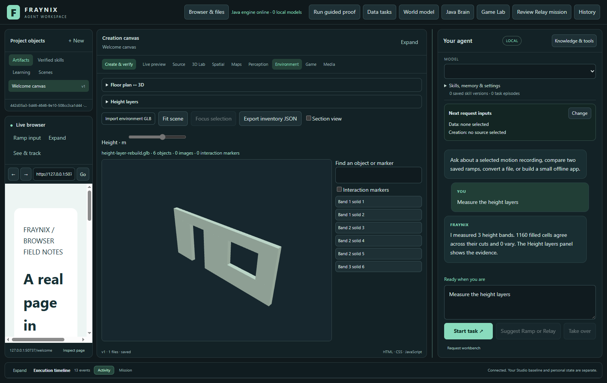
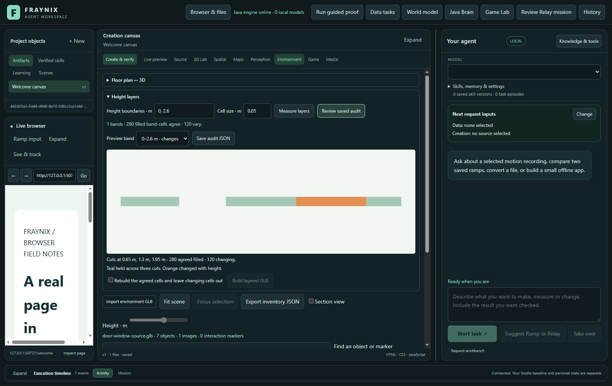
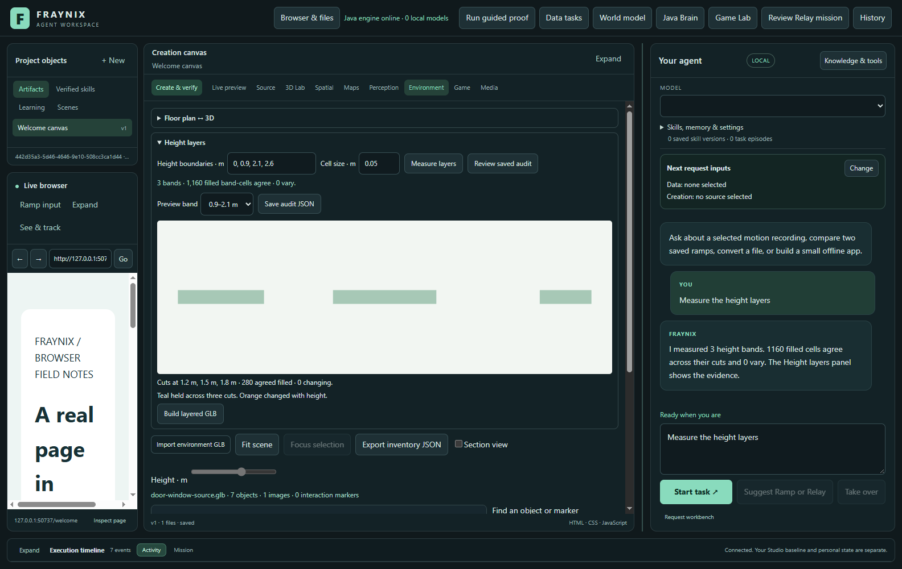

Recover openings from measured height layers
Compare height bands and measure the openings in the rebuilt model.

The editable rebuild preserves the doorway, window, sill and headers

A wide band marks the changing positions in orange

The middle band from the three-band audit
System files
Open source